|
|
| crabs text index | photo index |
| Phylum Arthropoda > Subphylum Crustacea > Class Malacostraca > Order Decapoda > Brachyurans > Family Pilumnidae |
| Common hairy
crabs Pilumnus vespertilio Family Pilumnidae updated Sep 2019
Where seen? Hairy crabs are commonly seen on rocky and coral rubble areas on many of our shores. The "teddy-bear" of crabs, these hairy little creatures fluff up in the water and look positively cuddlesome. But they are hard to spot and usually well hidden, especially during the day. They are more active at night, but even then, they usually scuttle into the nearest crack or crevice at the first sign of danger. These little crabs are not the same as the large 'Hairy crabs' that are served in our restaurants as seafood. Features: Body width 3-5cm. As its name suggests, its body and limbs are covered with long, silky hairs. These trap sediments allowing the crab to blend perfectly with its surroundings. In the water, its hairs 'fluff up' breaking up its body outline. It also moves slowly and thus overlooked as some bit of drifting rubbish. It has large claws, with black or light brown tips. It has reddish eyes. The Common hairy crab (Pilumnus vespertilio) is the most commonly encountered hairy crab on our shores and reefs. It has long, soft hairs and has been described as having the appearance of a mop. The various species of hairy crabs are very difficult to distinguish in the field. |
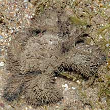 Labrador, Jun 08 |
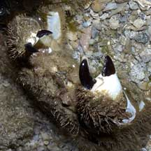 Sentosa, Aug 04 |
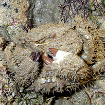 A pair mating? Cyrene Reef, Jun 08 Photo shared by Toh Chay Hoon on flickr.. |
| What does it eat? The Common hairy
crab eats mainly seaweed. It may also eat toxic zoanthids (colonial anemones) and this makes the crab mildly poisonous. Various
hairy crabs on our shores have been observed nibbling on hard seaweeds,
sponges and even appearing to snack on bristleworms, carrying a clam into a burrow. Also possibly having
a taste of a nudibranch and dragging a seahare into its burrow leaving a trail of purple dye from the panicking seahare. Status and threats: Several of our hairy crabs are listed among the threatened animals of Singapore. Like other creatures of the intertidal zone, they are affected by human activities such as reclamation and pollution. Trampling by careless visitors also have an impact on local populations. |
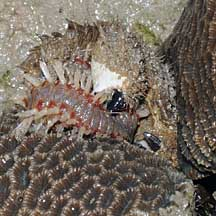 Eating a bristleworm! Pulau Semakau, Mar 08 |
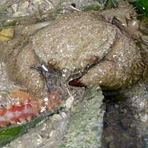 Eating a bristleworm. Cyrene Reef, Oct 08 Shared by Toh Chay Hoon on her flickr. |
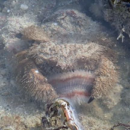 Eating a bristleworm. Cyrene Reef, Oct 08 Shared by Shawne Goh on facebook. |
|
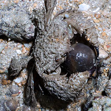 Nibbling on a Hairy olive sponge. Terumbu Pempang Tengah, Apr 12 |
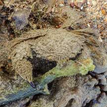 About to nibble on a sponge? Terumbu Pempang Tengah, May 21 Shared by Vincent Choo on facebook. |
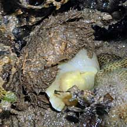 About to nibble on nudibranch? Pulau Hantu, Jul 08 |
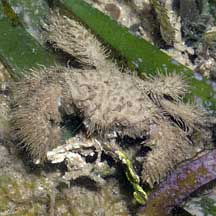 Nibbling on hard seaweed. Labrador, Feb 06 |
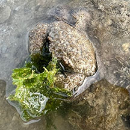 Eating seaweed? Beting Bemban Besar, Oct 25 Photo shared by Kelvin Yong on facebook |
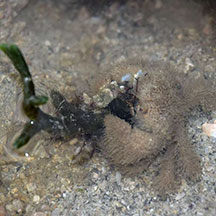 Eating a sponge-seaweed. Terumbu Bemban, Jun 20 Photo shared by Dayna Cheah on facebook. |
| Common hairy crab dragging a seahare into its burrow. Terumbu Bemban, Apr 22. Video shared by Juria Toramae |
| Common hairy crabs on Singapore shores |
On wildsingapore
flickr
|
| Other sightings on Singapore shores |
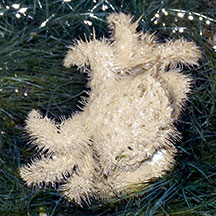 Sentosa Tg Rimau, Oct 25 Photo shared by Loh Kok Sheng on facebook. |
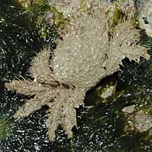 Pulau Biola, Dec 09 |
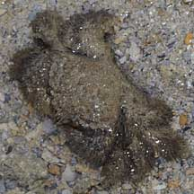 Terumbu Berkas, Jan 10 |
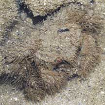 Pulau Pawai, Dec 09 |
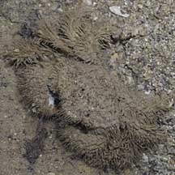 Pulau Sudong, Dec 09 |
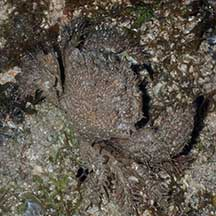 Pulau Salu, Apr 21 Photo shared by Toh Chay Hoon on facebook. |
 |
Hairy crabs about to mate? |
Links
|